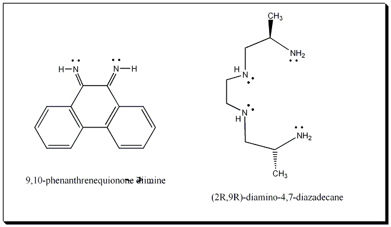

|
|
More Information on the [Λ-α-[Rh[(R,R)-Me2trien]phi]3+ IonThis is the Λ isomer of the [α-[Rh[(R,R)-Me2trien]phi]3+ ion shown with all multiple bonds (not illustrating the delocalized nature of the bonds in the phi ligand). Phi is the abbreviation for the 9,10-phenanthrenequinone diimine ligand. It is neutral and does not deprotonated when it binds. The second ligand abbreviated (R,R)-Me2trien for the (2R,9R)-diamino-4,7-diazadecane ligand is tetradentate. It is also neutral and does not deprotonate when it binds. The overall complex carries a 3+ charge from the central Rh(III) ion.  (CCDC Reference: PITPAJ) Krotz, A.H., Barton, J.K.; Inorganic Chemistry Vol 33, 1994, p. 1940-1947 |
Return to Index.....
Return to Professor Barton's Research